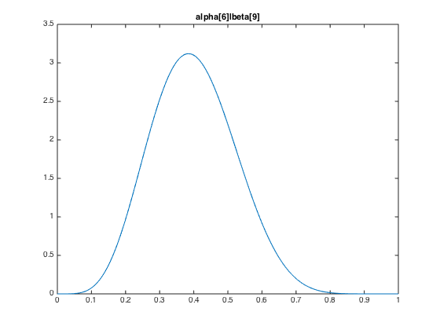
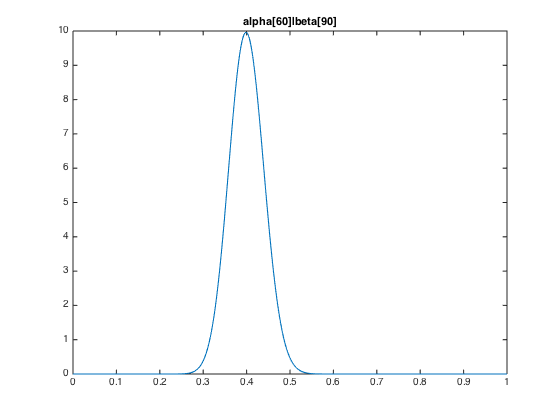

PDF:
Beta Distribution is the conjugate prior of many discrete distributions, including the Bernoulli and binomial distribution, in Bayesian inference.
The parameters,
Mode, in statistics, is the value that appears most often in a set of data, corresponding to the peak in the PDF. The anti-mode is the lowest point of the probability density curve.
The mode of a Beta distributed random variable X with α, β > 1 (and anti-mode with α, β < 1), is
Beta Distribution: https://en.wikipedia.org/wiki/Beta_distribution
The followings are the illustrations of the hyperparameters.


Note that y axis stands for probability density, which can exceed 1 with no surprise (probability is the integral of probability density).